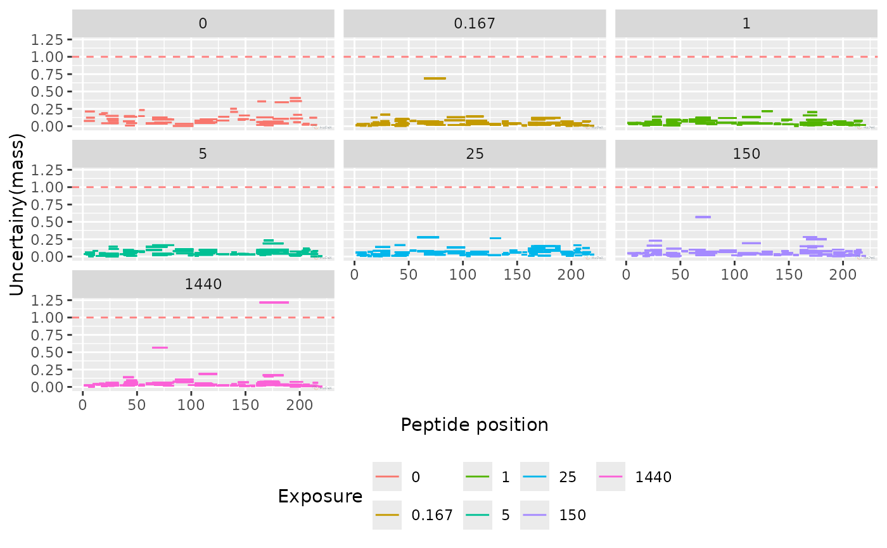
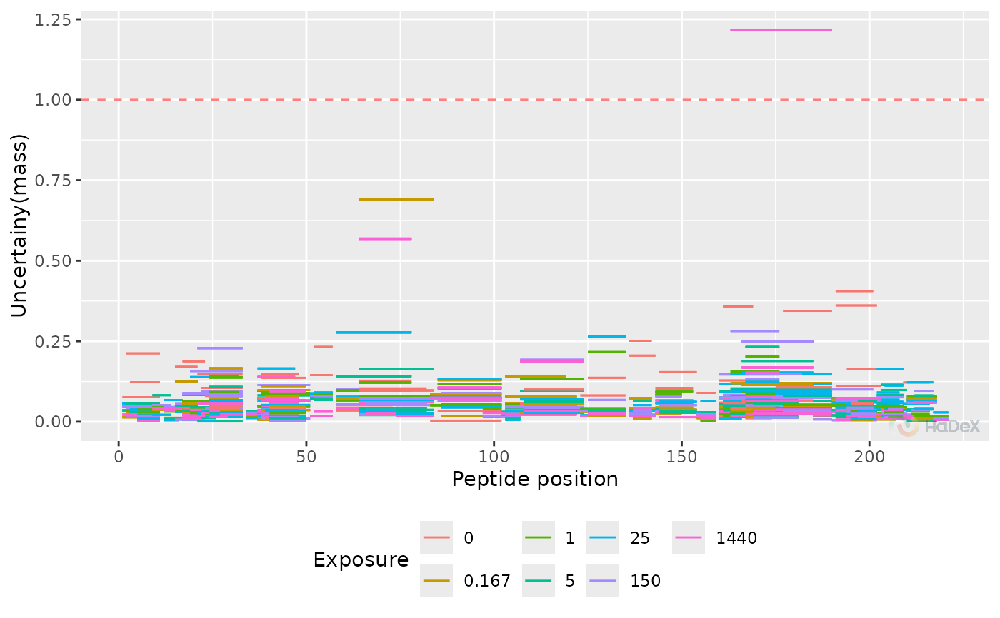
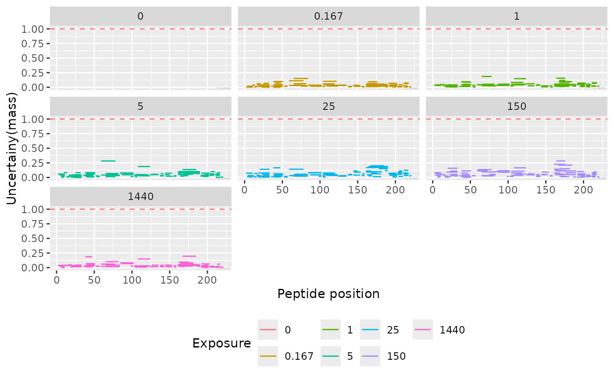

Uncertainty of the peptide measurements
plot_uncertainty.RdPlot the uncertainty of the mass measurements - for aggregated data or before aggregation - to see if there is a region with uncertainty higher than acceptable
Usage
plot_uncertainty(
dat,
protein = dat[["Protein"]][1],
state = dat[["State"]][1],
skip_amino = 0,
aggregated = TRUE,
separate_times = TRUE,
show_threshold = TRUE,
interactive = getOption("hadex_use_interactive_plots")
)Arguments
- dat
data imported by the
read_hdxfunction- protein
selected protein
- state
selected biological state for given protein
- skip_amino
integer, indicator how many aminos from the N-terminus should be omitted- aggregated
logical, indicator if presented data is aggregated on replicate level- separate_times
logical, indicator if the values for different time points are presented separately- show_threshold
logical, indicator if the threshold of significance is shown
Details
The function plot_uncertainty generates
a plot of uncertainty of mass measurement of each peptide from
selected protein in selected biological state. The values can be presented
in two ways: as aggregated values for each replicate, or before
aggregation - measured values for charge values within a replicate.
On X-axis there is a position in a sequence, with length of a segment
of each peptide representing its length. On Y-axis there
is uncertainty of the measurement in Daltons.
The threshold is set to 1 Da, as this value is associated with exchange.
Examples
plot_uncertainty(alpha_dat)
#> Warning: Removed 107 rows containing missing values or values outside the scale range
#> (`geom_segment()`).
plot_uncertainty(alpha_dat, aggregated = FALSE)
#> Warning: Removed 45 rows containing missing values or values outside the scale range
#> (`geom_segment()`).

plot_uncertainty(alpha_dat, aggregated = FALSE, separate_times = FALSE)
#> Warning: Removed 45 rows containing missing values or values outside the scale range
#> (`geom_segment()`).

plot_uncertainty(alpha_dat, skip_amino = 1)
#> Warning: Removed 107 rows containing missing values or values outside the scale range
#> (`geom_segment()`).
